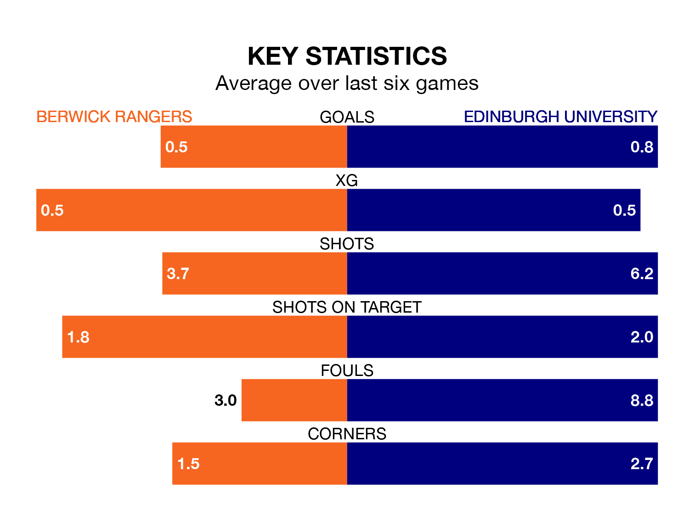

Edinburgh University travel to Shielfield Park for Saturday's match against Berwick Rangers looking to bounce back from defeat last time out in Highland and Lowland Football Leagues.
Edinburgh University, who sit zero in the league after 17 games, fell to a 2-0 home defeat to Albion Rovers on December 9.
They face a Berwick side who also lost their last match, a 2-1 defeat to Cumbernauld Colts, and who sit zero in the table.
Berwick are in terrible form in Highland and Lowland Football Leagues, with no wins and a draw from their last six games.
With a win and five losses over that period, Edinburgh University's form is slightly better – they have taken three points from 18, compared to Rangers' one.
With 11 goals in 17 games so far this season, the visitors are the league's-16th-lowest scorers with 0.6 goals per game. And they are conceding more than average, letting in 65 goals at a rate of 3.8 per game.
The home team are also below average scorers, with 0.9 goals per game, compared to a league average of 1.7. They have conceded 1.4 goals per game.
In the last three years, Berwick and Edinburgh University have played each other on five occasions. Berwick won all of them.
On average, Berwick scored 2.8 goals and Edinburgh University 0.4 in those matches.
Their last meeting was on August 22, when Berwick won 3-1 away.
